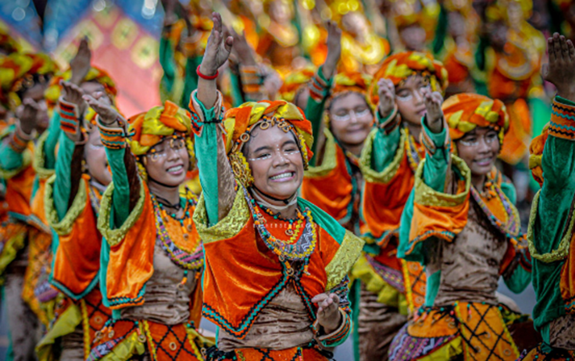

The Sandugo Festival is a cultural and historical event celebrating the founding anniversary of Tagbilaran, Bohol, Philippines, every July 22nd. It marks the blood compact between Sikatuna and Miguel Lopez de Legazpi from the 16th century. Spanning a month, the festival promotes tourism and recognizes the province's establishment.
Origin of Sandugo Festival
The Sandugo Festival derives its name from the term "sandugo," which literally translates to unified or one blood. The first Sandugo Festival took place in 1989 during the governorship of Constancio Torralba. This yearly event is coordinated by the provincial government and the Isang Dugo Foundation.
It honors the blood compact (kasikasi in the local language, pacto de sangre in Spanish) established on March 25, 1565, between the Spanish colonizer Miguel Lopez de Legazpi and Datu Sikatuna, the chieftain of Bohol. On one of Legazpi's ships, he and Datu Sikatuna drew blood from their bodies, mixed it with an alcoholic drink, and consumed it to formalize their Treaty of Friendship. Legazpi later performed the same ritual with Datu Sigala. This custom, common in precolonial Philippines, symbolized alliances or the resolution of conflicts, with the belief that breaking the oath would bring a curse to future generations.
Historians said that Legazpi performed a blood oath because his expedition was low on supplies and he wanted to ensure safe interactions with the natives after a previous sailor was killed. Datu Sikatuna was also hesitant due to earlier Portuguese attacks. However, reassurances from both sides led Sikatuna to meet Legazpi on his ship, an event famously depicted in Juan Luna's painting "El Pacto de Sangre" in 1886.
Uniqueness of Sandugo Festival
The Sandugo Festival spans a month, beginning with opening ceremonies on July 1 and concluding on July 31. It features activities that celebrate Bohol’s culture, community spirit, and festivities, including trade and agriculture fairs, job fairs, and a tourism expo. Various competitions take place in sports such as dragon boat racing, darts, skateboarding, and e-sports. Additionally, the festival includes traditional dance performances, concerts, a pet show, medical missions, and heritage tours.
The Bangga sa Kuradang, or Kuradang Competition, and Subli sa Sandugo, or Sandugo Reenactment, highlight the unique street dancing at the festival. These events showcase the kuradang folk dance and dramatize the blood compact, helping to differentiate the festival from similar ones and emphasizing indigenous customs and the artistry of Bohol's people. Kuradang is a courtship dance characterized by a man's attempts to woo a woman, often reflecting the movements of arnis, a traditional Filipino martial art. The street dancing event was canceled from 2020 to 2022 due to the COVID-19 pandemic.
The festival not only commemorates a significant historical event but also fosters a sense of identity and pride among the people of Bohol, bridging the past with contemporary celebrations.